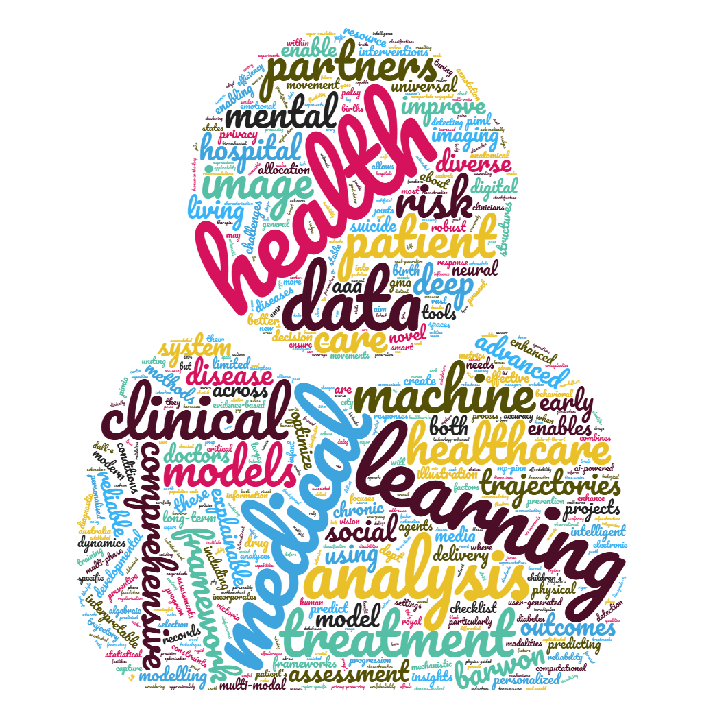

A companion that, used by district clinicians and community health workers with only local resources, shortens the time to correct treatment, cuts missed serious illness and needless referral, and raises the clinician’s own skill. Routine cases should work offline.
AI for Health
AI co-doctor.
A clinical colleague for places where doctors, tests and specialists are scarce: it follows the illness over days, plans diagnosis, treatment and referral with what is actually available, and helps the clinician improve. Before any of that can be claimed, we have to be able to measure it honestly. That is where the work is now.

Benchmark accuracy is only a component check. The yardstick is time to correct treatment, missed serious illness, needless referrals and tests, the clinician’s unaided accuracy over time, follow-up outcome, and cost per patient.
Benchmark and prototype phase. Nothing here has been used with patients. Clinical safety and benefit need clinician studies and approvals that have not yet happened.
What we have found
The benchmark was inflating the numbers.
From our technical report, 22 November 2026. It is not yet peer reviewed.
An open reconstruction
Microsoft’s diagnostic orchestrator was reported at 80.3% on emergency cases from the Sequential Diagnosis Benchmark (MIMIC-IV), with no public code. We built our own panel on Claude. Frozen and run once on the 325 sealed cases, it reached 78.8% (95% interval 74.0–82.9%). The pre-registered non-inferiority test was not passed, by four cases.
The simulator invents evidence
When a record lacks a requested result, the benchmark’s simulated patient makes one up: in 44% of requests in our runs. With a simulator that answers “not documented”, accuracy fell by 14 of 163 training cases. We treat a faithful, auditable evaluation as a contribution in itself.
Knowing when to hand off
A probability-gap signal flags the agent’s errors (AUROC 0.83 on the sealed cases). Combined with a second reader from another model family, it halved misses of dangerous diagnoses on a new set, but handed off about a quarter of correct answers, above our own stated bound. We stopped the set rather than adjust the bound.
Next target
Earlier recognition of childhood cancer in Vietnam.
Late diagnosis is the problem. The question for clinicians: at a child’s first visit, would the system have raised cancer, asked for the right next test, and referred, and how much earlier than actually happened?
On 20 unseen published cases, the adapted system raised all 11 cancers by their diagnosis visit. After a fix for false alarms, 1 of 6 benign look-alikes ended up flagged. The sample is small and published cases skew unusual, so this is a development check, not a claim.
- A silent, retrospective study on de-identified records, with no patient contact.
- Success criteria agreed with oncologists and fixed before results are seen.
- Setting cards for commune, district, provincial and national hospitals, so advice matches the tests each can do.
- Needs a hospital partner and ethics approval before any hospital data is used.
The design
Seven properties of a co-doctor.
Most are not built yet. The reasoning core is one module, not the product.
Follows the illness
Treat, wait, re-test, revise, across days rather than one visit.
Perceives
Listens in local languages; reads rapid-test strips, rashes and printouts from a phone.
Plans the pathway
Diagnosis, treatment, referral and follow-up as one decision, against local tests, drugs and transport.
Teaches
Asks before it answers, and succeeds when the clinician needs it less.
Learns locally
Follow-up outcomes update district disease rates and the system’s own calibration.
Knows its limits
Calibrated, cites evidence, refers early, with an audit trail.
Works where the patient is
Offline for routine cases, cloud for hard ones, a voice interface for community health workers.
We are looking for clinician reviewers, hospital and WHO partner sites, and data with the right licences for image and voice work.